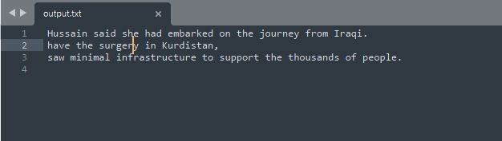

Лабораторная робота №7
Тема: Обработка строк и файлов языками функционального программирования
Вариант 2
Cодержание
Обоснование выбора языка программирования и IDEЗадание 1
Выводы
Обоснование выбора языка программирования и IDE
Для выполнения задач был выбран язык программирования Scheme, т.к. он является строго функциональным и прост в освоении благодаря упрощенному синтаксису языка.
Среда разработки была выбрана DrRacket, так как она является бесплатной и имеет понятный и упрощенный интерфейс.
Задание 1.
Записать в текстовый файл n строк текста, которые задаются программой на функциональном языке программирования. Считать строки из созданного программой файла, вывести их на экран. Посчитать количество повторений каждой буквы в строках текста. Заменить заданную пользователем букву в тексте на её порядковый номер в алфавите. Записать в новый текстовый файл результат обработки текста.
HIPO диаграмма:

Код программы с комментариями:
#lang racket
; ============== Zadanie 1 ==============
; запись в файл n строк
(define (write-to-file filename)
;(delete-file filename) ; удалить файл, когда он существует
(display "Input count of lines n=")
(define n (read-line))
(set! n (string->number n)) ; преобразование в число
(define fd (open-output-file filename)) ; открытие файла на запись
; запись поочередно строк с файл
(define (write-lines i)
(cond ((< i n)
(display i) (display " line: ")
(define tmp-line (read-line)) ; считывание строки с клавиатуры
(display tmp-line fd) ; запись строки в файл
(newline fd)
(write-lines (+ i 1))))) ; переход к записи следующей строки
(write-lines 0)
; закрытие файла
(close-output-port fd))
; вектор обработанных символов
(define used-letters (vector))
; вектор количества повторений обработанных символов
(define count-used-letters (vector))
; проверка символа на букву
(define (allow-letter? letter)
; создание вектора из недопустимых символов
(define forbidden-symbols (list->vector (string->list "0123456789 .,!?")))
(define forbidden-length (vector-length forbidden-symbols))
; проход по вектору недопустимых символов
(define (iter-symbols i)
; если рассматриваемый символ совпадает с недопустимым
(cond ((and (< i forbidden-length) (eq? letter (vector-ref forbidden-symbols i)))
#f) ; то вернуть false
((< i forbidden-length)
(iter-symbols (+ i 1))) ; переход к следующему недопустимому символу
(else
#t))) ; иначе совпадений нет
(iter-symbols 0))
; обработка символа
(define (check-letter letter)
(define used-length (vector-length used-letters))
; проход по уже обработанным символам
(define (iter-check i)
; если рассматриваемый символ уже находится в векторе
(cond ((and (< i used-length) (eq? letter (vector-ref used-letters i)))
; то он учитывается, добавлением 1 к соответсвующему элементну вектора повторений
(vector-set! count-used-letters i (+ (vector-ref count-used-letters i) 1)))
((< i used-length) ; если не вышли за пределы вектора
(iter-check (+ i 1))) ; переход к следующему обработанному символу
(else ; значит символ не встречался ранее
; необходимо добавить новый символ в вектор обработанных символов
(set! used-letters (vector-append used-letters (vector letter)))
; добавить 1 в вектор количества повторений
(set! count-used-letters (vector-append count-used-letters (vector 1))))))
(cond ((allow-letter? letter) ; проверка символа: является ли буквой?
(iter-check 0)))
)
; подсчет количества символов
(define (count-letters list-lines)
; проход по всем строкам
(define (iter-lines lines)
(cond ((not (null? lines)) ; пока есть строки
(define current-line (car lines))
(define size (string-length current-line)) ; запись длины строки
; проход по символам строки
(define (iter-one-line i)
(cond ((< i size)
; передача символа на обработку
(check-letter (string-ref current-line i))
(iter-one-line (+ i 1)))))
(iter-one-line 0)
(iter-lines (cdr lines)))))
(iter-lines list-lines)
(displayln "Count of letter repeating:")
; функция вывода букв и их кол-во повторений
(define (display-vectors i)
(cond ((< i (vector-length used-letters))
(display (vector-ref used-letters i))
(display " - ")
(display (vector-ref count-used-letters i))
(newline)
(display-vectors (+ i 1)))))
(display-vectors 0)
)
; считывание содержимого файла
(define (read-from-file filename)
(displayln "Output text content:")
; список для сохранения строк из файла
(define list-lines (list))
; открытие файла на чтение
(define fd (open-input-file filename))
; построчное чтение из файла
(define (iter-read n)
(define next-line (read-line fd)) ; считывание следующей строки
(cond ((not (eof-object? next-line)) ; пока не достигнут конец файла
(display n) (display ": ")
(displayln next-line) ; вывод на консоль считанной строки
; добавление считанной строки в список
(set! list-lines (append list-lines (list next-line)))
(iter-read (+ n 1))))); переход к считыванию следующей строки
(iter-read 0)
; закрытие файла
(close-input-port fd)
; подсчет количества повторений символов
(count-letters list-lines)
)
; функция для замены буквы на позицию в алфавите
(define (change-letter filename)
; открытие файла на чтение
(define fd-read (open-input-file filename))
; открытие файла на запись
(define fd-write (open-output-file "result.txt"))
(display "Input LETTER to change: ")
(define letter (read-line)) ; считывание буквы
; преобразование буквы в номер согласно ASCII
(define position-in-alphabet (char->integer (string-ref letter 0)))
; если буква upper-case
(cond ((<= position-in-alphabet 91)
(set! position-in-alphabet (- position-in-alphabet 64)))
(else ; иначе буква lower-case
(set! position-in-alphabet (- position-in-alphabet 96))))
(display "Position in alphabet: ")
(displayln position-in-alphabet)
; построчное считывание из файла
(define (iter-read)
(define next-line (read-line fd-read)) ; считывание следующей строки
(cond ((not (eof-object? next-line)) ; пока не достигнут конец файла
(define length-line (string-length next-line)) ; запись длины строки
(define (iter-line i) ; проход по символам строки
; если в строке найден символ совпадаюищий с заданным
(cond ((and (< i length-line) (eq? (string-ref letter 0) (string-ref next-line i)))
; вырезается подстрока до найденной буквы и добавляется порядковый номер
(define new-before (string-append (substring next-line 0 i) (number->string position-in-alphabet)))
; переприсваивается текущая строка на новую с заменой буквы на порядквовый номер
(set! next-line (string-append new-before (substring next-line (+ i 1) length-line)))
; перерасчет длины строки
(set! length-line (string-length next-line))
(iter-line (+ i 1))) ; переход к следующему символу
((< i length-line)
(iter-line (+ i 1)))))
; запуск итеративного прохода по строке
(iter-line 0)
; запись обработанной строки в файл
(display next-line fd-write) (newline fd-write)
(iter-read)))); переход к считыванию следующей строки
(iter-read)
; закрытие файла на чтение
(close-input-port fd-read)
; закрытие файла на запись
(close-output-port fd-write))
; записать в файл строки, считанные с клавиатуры
(write-to-file "output.txt")
; вывести содержимое файла
(read-from-file "output.txt")
; замена буквы на порядковый номер в алфавите
(change-letter "output.txt")
Скриншот результата работы программы:
Файл с исходным текстом |
Файл с обработанным текстом |
|  |
Анализ достоверности результатов:
Чтобы убедиться в правильном подсчете количества повторений букв в тексте был использован онлайн сервис: https://www.siteprojects.ru/?article=seo-kolichestvo
Скриншот результатов онлайн сервиса
Также на скриншотах, отображающих текстовые файлы, можно увидеть исходный текст, который был введен пользователем и записан в первый файл, затем пользователь ввел букву s (отображено на скриншоте консоли программы), которую необходимо заменить на её порядковый номер в алфавите. Буква s имеет 19 порядковый номер в алфавите, следовательно все буквы s в исходном тексте должны быть заменены на 19, что отображено на скриншоте Файл с обработанным текстом.
Перейти к исходному коду
Выводы:
В лабораторной работе были реализованы:
- процедура считывания строк с клавиатуры и записи этих строк в файл;
- процедура подсчета количества повторений букв в строках текста, для которой было использовано два вектора: вектор обработанных символов и вектор количества повторений, в которых под одним индексом находились символ и количество повторений данного символа;
- процедура замены символа, заданного пользователем, на её порядковый номер в алфавите и запись обработанного текста в новый файл. Выполняется с помощью вырезания подстроки от начала до заданного символа и присоединения порядкового номера заданного символа, а затем присоединения подстроки от символа после заданного до конца строки.
При анализе результатов работы функции для подсчета количества повторений букв в тексте с онлайн сервисом было определено, что результаты идентичные - означает, что функция отрабатывает верно.
При анализе результатов работы функции для замены заданной буквы на ее порядковый номер в алфавите, определено, что в новый файл записывается обработанный текст, в котором все символы, равные заданному, заменяются на порядковый номер - следовательно функция работает как и ожидалось.